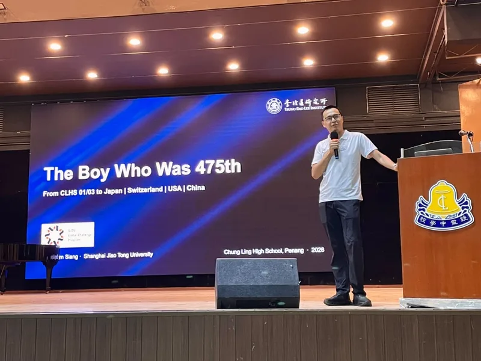
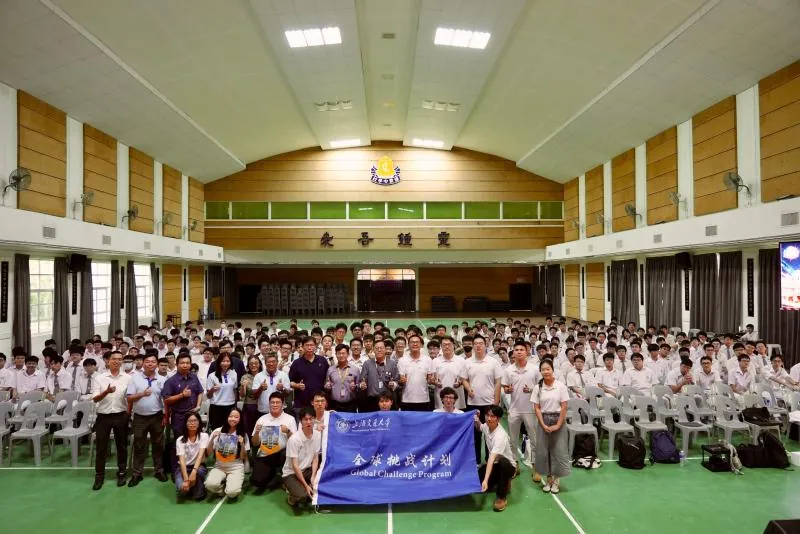
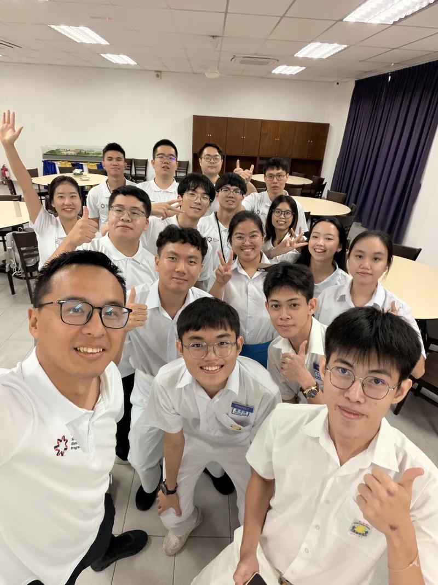

On 5 August, the first exchange of the group’s Global Challenge Program 2026 trip took the team to Chung Ling High School in Penang, a Chinese-medium school with more than a century of history — and Kim Siang Khaw’s alma mater. Returning as an alumnus, Kim Siang told the students how his own path led from Chung Ling out into the world, explained the aims of SJTU’s Global Challenge Program, and introduced muon physics, his research field.




He also gave an overview of the Tsung-Dao Lee Institute and its research, and welcomed the students to consider further study in China. Qee Enn Tai, a Malaysian undergraduate in SJTU’s School of Computer Science, offered a student’s guide to studying at SJTU and to campus life. Yifei Li, an undergraduate in the School of Physics and Astronomy, described how building his own solar spectrometer and working on muon physics took him from curiosity and classroom learning to real research.
Afterwards, the SJTU and Chung Ling students chatted about school life in Malaysia, local culture and how to apply to study in China. The team demonstrated how its muon-imaging detector works. Kim Siang and principal Khor Chin Soon exchanged souvenirs and held a first discussion on working with the school’s board of directors on muon imaging.


This was stop 1 of five on the group’s Global Challenge Program 2026 trip across Peninsular Malaysia (4–11 August). Read the full trip summary, or the original report (in Chinese) on the 缪子科技实验室 WeChat account.
8月5日，项目组到访槟城百年华文名校——钟灵中学，与当地师生开展交流。许金祥以校友身份回到母校，结合自己从钟灵中学走向世界的求学和工作经历，分享了交大全球挑战计划的初衷与目标，并介绍了其专攻的缪子物理研究方向。
他还向钟灵中学师生介绍了李政道研究所的整体定位与科研布局，帮助同学们拓展学术视野、增进对中国高等教育的了解，并欢迎大家日后赴中国深造。计算机学院本科生、马来西亚籍留学生戴颀恩（Qee Enn Tai）从留学生视角分享了在交大的学习与校园生活；物理与天文学院本科生李逸飞结合自制太阳光谱仪、参与缪子物理研究等经历，讲述物理学习如何从好奇、课堂和动手实践逐步走向真实科研。
分享会后，交大学生与钟灵中学同学就校园生活、马来西亚当地文化及来华留学申请等话题轻松交流。项目组成员演示了缪子成像探测器的工作原理；许金祥与钟灵中学校长许谨顺（Khor Chin Soon）互赠纪念品，并就未来与钟灵中学校董会开展缪子成像技术合作进行了初步探讨。
本文为课题组2026“全球挑战计划”马来西亚之行（8月4日至11日）五站交流中的第1站。查看行程总结，或阅读缪子科技实验室微信公众号原文。
文稿：温诗悦 摄影：叶梓泓、温诗悦